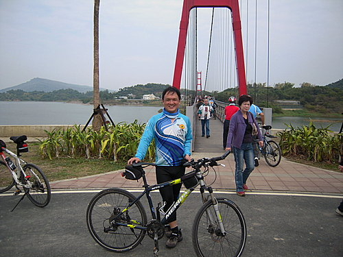

阿公店水庫係以濱水岸的方式設置，全長約8公里，利用壩頂空間、水濱棧道及鄉間小徑串聯環車庫自行車道系統，沿途景觀優美，並有著名阿公店水庫十景：岡山倒影、長堤夕照、龍口吞泉、水漾釣月、煙波虹橋、竹林泮騎、樹影果春、晨鐘暮鼓、日昇蓬萊，頗值一遊！
阿公店水庫係以濱水岸的方式設置，全長約8公里，利用壩頂空間、水濱棧道及鄉間小徑串聯環車庫自行車道系統，沿途景觀優美，並有著名阿公店水庫十景：岡山倒影、長堤夕照、龍口吞泉、水漾釣月、煙波虹橋、竹林泮騎、樹影果春、晨鐘暮鼓、日昇蓬萊，頗值一遊！
管理中心前的圓形廣場，河東獅3/6活動集合及解散地點，該處設有停車場供車友停放

自行車道起點─隊長與路人合影！

環湖自行車道，管理機關種植的樹要快快長大，讓我們夏天也能去騎阿公店水庫。當然，南台灣春天的太陽，曬起來還蠻舒服的，3/6活動，應該不用擔心太陽太大吧！
長堤夕照，全長約2公里，可以飆一下車，感覺真棒！
美麗的阿公店水庫湖景，看著我們的背影，心想好久沒騎車爬山了，但是我們二個人似乎還是沒有想像中那麼胖！
美麗浪漫的煙波虹橋，我覺得阿公店水庫屬這裡最美，能和心愛的人或全家人一起騎車環湖，應是人生美麗的時光！
（後記）感謝河車獅車友紀老、阿山哥、小獅、阿嘉、睿睿於挑戰中寮山後，仍願用僅存的一絲體力，偕同前往阿公店水庫探勘、拍照，為我們河東獅3/6阿公店水庫自行車逍遙遊譜出美麗的起點，自行車環島情誼，令人永生難忘！
您好： 阿公店水庫真的很漂亮厚^^ 如果還有來燕巢玩，可以順道來參觀我們”瀚苗果樹苗園” 我們是專門培育上百種水果樹苗、花卉的種苗園藝店 歡迎有空閤家大小前來參觀喔^^ 園址：位於國道10號 燕巢交流道下，往燕巢方向60公尺即抵。 (珍珠芭樂苗、無籽芭樂苗、紅芭樂(紅皮紅果肉)、紅心芭樂苗(綠皮紅果肉)、大蜜棗、芒果十幾種苗、龍眼、荔枝、檸檬、柳丁、橘子 桑椹、平地紅蘋果、4029熱帶梨、熱帶甜柿、熱帶水蜜桃、柚子、楊桃…很多很多種 新品種苗：平地小藍莓(結果纍纍)、甜美可口滴平地甜櫻桃、加拿大櫻桃、美國大櫻桃、西印度櫻桃、世界一甜櫻桃、脆紅果肉珍珠芭樂苗、榴槤蜜、甜楊梅、黃金果、牛奶果、大石榴、四季芒果、四季龍眼…)陽台屬半日照可種櫻桃、無花果、各式花盆、觀賞盆喔^^ 水果苗哪裡買？…來~”瀚苗果樹苗園”就對了喔 ~希望有機會為您服務ㄛ~ 祝福您全家平安健康快樂！
悠遊騎乘於煙波吊橋及蓬來吊橋之上， 畫面優美，幸福洋溢。 由其是於吊橋上俯瞰整座水庫， 更是波光盪漾， 讓人迷戀不已。 千萬要去體驗一下， 錯過可惜喔！ 過來人的肺腑之言